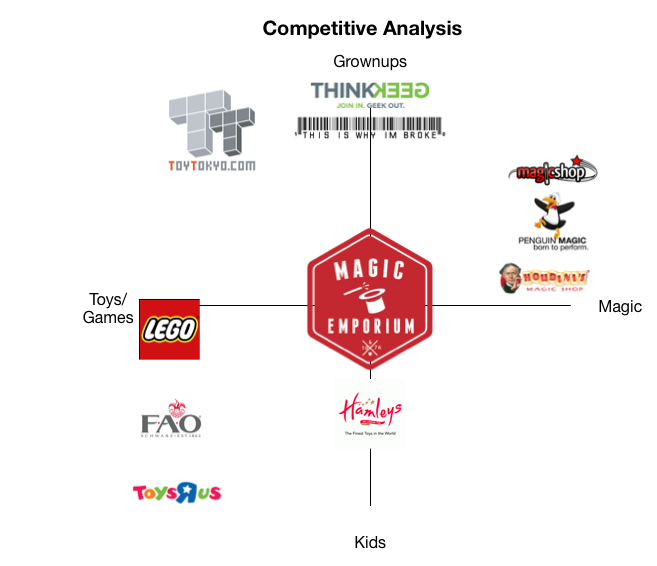

Portfolio
Popular Democracy
Webpage Redesign
Netflix
New Feature Implementation
Magic Emporium
Website Design
Webpage Redesign
New Feature Implementation
Website Design
I received my BFA in animation from the Savannah College of Art & Design where I learned 2D and 3D with a specialization in character and effects animation. I also studied professional writing and sequential art.

I became an independent contractor while at SCAD and have freelanced ever since. I've done art, animation and design work as well as writing, translation and editing.

I went to the Republic of Georgia as a volunteer teacher and freelanced for another year after my contract ended. I then went on to Japan for an internship with the Labo International Exchange Foundation.
After returning to the States I continued freelancing and started studying programming and scripting languages independently. When I learned about the Opportunity Fund, I applied and was awarded it, which brought me to GA in DC for the UXDI program.
The Magic Emporium is a retailer of toys, games, and magic tricks.
Through their new website, Magic Emporium wants to showcase their range of products, while maintaining their brand image of tradition, fun, creativity.
| Tools | ||
| Pencil & Paper | Omnigraffle | Axure |
 |
 |
 |
My Role: Competitive analysis, sketching & ideation, user flows, wireframes & sketches, sitemap, prototype.
Product: The Magic Emporium website features simple product discovery and navigation, an informative, image-centric product page, quick checkout, featured products, product reviews, a loyalty program and customizable navigation.
Competitive Analysis: Magic Emporium sets itself apart by appealing to a large audience with a wide range of products. It can also differentiate itself by maintaining the simple, streamlined shopping experience that many large e-retailers lack.
Planning: A group of users provided with Magic Emporium's top 100 products used card sorting to inform the initial information architecture.
Sitemap: After multiple iterations, the final sitemap was streamlined to reduce clutter, simplify navigation and organize information logically.
Sketches & Design Studio: After starting with very rough product page concepts and working up through the site heirarchy, a design studio helped flesh out ideas for the product, category and home pages.

Wireframes: Wireframes built in Axure solidified the ideas developed during the sketching process and defined key features for site layout. The primary functions of the site are simple navigation, prominent visuals, one-page checkout. Other features include reviews and customization.
Netflix, Inc. is a provider of on-demand Internet streaming media.
Netflix is looking to significantly increase social activity & sharing on their site between users. They want to start with an MVP-- the smallest feature set that is valuable to users. They want to understand how people find and share movies. They want to address the key screens using the current visual design of Netflix.com and NOT shock the existing audience with change.
| Pencil & Paper | Typeform | Omnigraffle | Axure |
|
 |
|
|
My Role: User research, competitive analysis, sketching & ideation, user flows, wireframes & sketches, clickable prototype, usability testing.
Product: An MVP that will serve as a welcome, useful feature to users while addressing the goal to increase social activities on Netflix.

Competitive Analysis: There are several popular video streaming services out there, but the two biggest competitors featuring business models similar to Netflix are Amazon Prime and Hulu. Of the three, Hulu has the most robust set of integrated social features.

User Research: User surveys and interviews revealed that while some people would love social features, most Netflix users are concerned with having full functionality across devices, better customization and more video content. Most use multiple video streaming sites and prefer discussing movies and TV in oral conversations as opposed to social media. View full report.
Feature Prioritization: None of the proposed features were met with overwhelming positive response from users, but the features that received the best response were access to recommendations based on favorite actors & directors, playlists and second screen features which could include social features.

Sketches & Ideation: Task analysis of competitor implementation of the target features inspired initial sketches. The goal was to implement the features in a way that would minimally impact the experience that current Netflix users are accustomed to.

User Flows: User flows exploring MVP features including multiple playlists, adding people to taste profile and using a second screen to make real-time comments.

Wireframes: Hi-fidelity wireframes illustrate the subtle changes the new features introduced to the existing Netflix web and mobile layouts. The clickable prototype built in Axure explores the new features on both interfaces. View the prototype.

User Testing: Users were able to intuitively use the new Netflix and did not find the changes jarring. Not all users responded positively to all changes, however, reinforcing the research that showed most users want content and control over their viewing experience, not new features and social interaction.
Results & Next Steps: Moving forward, our recommendations include improving search functions, the consistency of content and ratings across devices, offering more control and customization to users and improving the content algorithm. Continue to expand the content library and offer social features without imposing them on users.
The CPD is a national organization promoting equity, opportunity and a dynamic democracy.
The goal of the redesigned website is to show more of the issues while maintaining the overall brand already established.
| Pencil & Paper | Illustrator | Sublime Text | Github |
|
 |
 |
My Role: Website audit, competitive analysis, design, HTML, CSS & jQuery.
Result: Redesign of the Economic Justice campaigns page improving the layout, modernizing the look, improving visuals and iconography and improving the browsing experience between campaigns. This layout can be applied to all other campaign pages.

At first glance, the redesign is more condensed and colorful and has some new key elements. You can see the original page at PopularDemocracy.org and the live example of the redesign here.
The following comparisons take a closer look at some of the changes.
The original logo was somewhat lacking in the type of sophistication one would expect from a modern organization. The redesign addresses this with a more versatile variation on the logo image, cleaner, evenly-spaced typography and the preservation of the overall look and color scheme in accordance with the brand.

The header has some of the most immediately noticable changes:
The icons representing the causes the CPD is dedicated to were among the visual elements most in need of modernization. Flat icons have replaced the clipart-remniscient originals, and they are presented in an interactive, animated banner that displays a brief summary of each cause from any of the cause pages.

The full description of each cause took up a lot of vertical space in the original position below the horizontal icons, so it has been relocated to the right column, providing more space for individual campaigns and creating more of a sense of movement down the page.

The text summary for each specific issue has been summarized in response to user feedback that it was overwhelming. The result is a layout that is easier on the eyes and simpler to browse while finding issues of interest.
Results & Next Steps: Moving forward, additional ideas include continuing to iterate on the design and interactivity of the cause icons, improving typography and redesigning other sections of the site.
Salter Mitchell is one of the nation's strongest behavior change marketing firms, and the International Rhino Foundation is a world leader in rhino conservation.
Salter Mitchell came to us seeking UX assistance on the website redesign for their client, the International Rhino Foundation. Rhinos.org needs simplified, modernized content, better organization and targeting of audiences based on need-states and desired conversions. They want to get people more engaged, reach a wider audience and increase conversions.
| Pencil & Paper | Omnigraffle | Axure | Google Forms | Illustrator |
|
|
|
|
Problem:
Solution:
Information Architecture
Information Architecture
Information Architecture
User Research

User Research

The initial wireframes and clickable prototype address the following key screens:
View all of the wireframes and see the clickable prototype here.

Usability testing showed that users were able to move through the user flows, but achieved this through different means than expected at some points. We learned that:

Before moving forward with visual design, we referred to the existing brand guidelines and color palette in the development of a new style tile defining colors, fonts and textures.

Mockups propose design solutions for the key screens wireframed for the prototype.
View all of the mockups here.
Results & Next Steps: Moving forward, additional ideas include ensuring a responsive layout that's functional and interactive across all devices, continuing to iterate upon the proposed interactivity and exploring additional options, implementing a comprehensive content management and maintenance schedule and incorporating a community hub, which was mentioned with interest repeatedly in the user survey responses.
Salter Mitchell is one of the nation's strongest behavior change marketing firms, and the International Rhino Foundation is a world leader in rhino conservation.
Salter Mitchell came to us seeking UX assistance on the website redesign for their client, the International Rhino Foundation. Rhinos.org needs simplified, modernized content, better organization and targeting of audiences based on need-states and desired conversions.
| Pencil & Paper | Omnigraffle | Axure | Google Forms | Illustrator |
|
|
|
|
My Role: Website audit, landscape analysis, user research, information architecture, wireframing, prototyping, design, presentation, client relations.
Result: Redesign of rhinos.org key screens including new sitemap, wireframes, prototype and digital mockups with a focus on improving information architecture, visual appeal and interactivity.

The current rhinos.org design has a high bounce rate, confusing site structure and overabundance of information. As the leading rhino conservation organization, IRF wants their new site to inform, convey their mission and values and to drive conversion through visual cues and calls to action.
Their three primary goals are to:
1. Drive awareness of rhino conservation issues
2. Establish the organization's legitimacy and efficacy
3. Raise funds and garner support for the organization
As the above sitemap shows, the current navigation consists of nine items, most of which have several subitems. The header also consists of links, including two major calls to action linking to the adoption and donation pages. The blog and curated news in the newsroom section--as well as several links on other pages--lead away from rhinos.org, and the About IRF section focuses more on the people behind the organization than the cause itself.
The new sitemap improves the organization of the site by consolidating and relocating information. The current site has no footer, so professional resources and information about IRF have been moved to the footer along with news and the blog, which have been consolidated and incorporated into the site. Major calls to action remain persistent in the header and footer.
We distributed a survey to IRF newsletter subscribers and received 310 responses. The results showed that primary audiences were active or retired professionals with personal, research or professional interest in rhino conservation.

Salter Mitchell provided several personas s representing their audienceand the research validated two and revealed a new one.The redesign was made both with IRF's goals and the needs of these audiences in mind.
View the full personas here.
The initial wireframes and clickable prototype address the following key screens:
View all of the wireframes and see the clickable prototype here.
Usability testing showed that users were able to move through the user flows, but achieved this through different means than expected at some points. We learned that:
Before moving forward with visual design, we referred to the existing brand guidelines and color palette in the development of a new style tile defining colors, fonts and textures.
Mockups propose design solutions for the key screens wireframed for the prototype.
View all of the mockups here.

After presenting the final solution to Salter Mitchell, we received feedback on the proposed donation page and made adjustments accordingly.
See the revised wireframe here.
Results & Next Steps: Moving forward, additional ideas include ensuring a responsive layout that's functional and interactive across all devices, continuing to iterate upon the proposed interactivity and exploring additional options, implementing a comprehensive content management and maintenance schedule and incorporating a community hub, which was mentioned with interest repeatedly in the user survey responses.


{kind=link}
{kind=link}
{kind=link}
{kind=link}
{kind=link}
{kind=link}